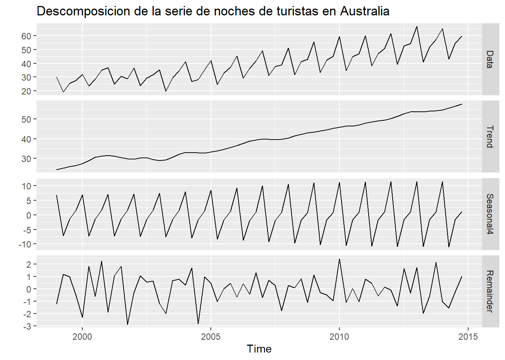
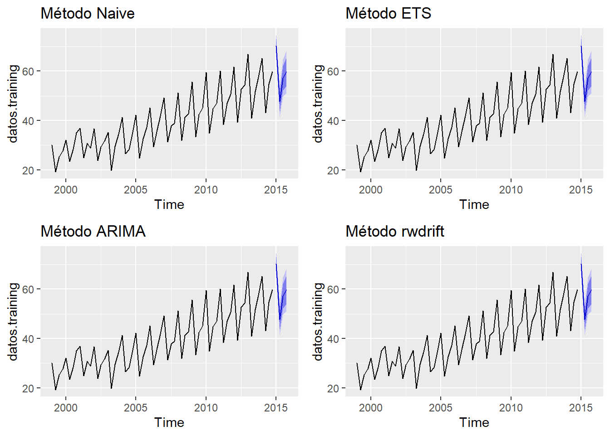

Descomposición estacional
Esta es la descomposición de la serie usando STL, aislando el componente estacional y dejando aparte el componente de tendencia ciclo para ser usado como base para realizar el pronóstico:
a <- forecast::mstl(AirPassengers)
head(a, 10)## Data Trend Seasonal12 Remainder
## Jan 1949 112 123.2952 -17.896297 6.6010511
## Feb 1949 118 123.8486 -19.246351 13.3977627
## Mar 1949 132 124.4019 6.740732 0.8573375
## Apr 1949 129 124.9553 -1.938243 5.9829703
## May 1949 121 125.6700 -4.047702 -0.6223200
## Jun 1949 135 126.3848 20.761163 -12.1459342
## Jul 1949 148 127.0995 44.083242 -23.1827623
## Aug 1949 148 127.6714 42.033144 -21.7045666
## Sep 1949 136 128.2433 12.027560 -4.2708835
## Oct 1949 119 128.8152 -17.128349 7.3131236autoplot(mstl(AirPassengers)) +
ggtitle("Descomposicion de la serie de Air Passangers")
Y el pronóstico para los próximos cuatro períodos usando los diferentes métodos estaría sería:
pronostico.stl1 <- stlf(ausbeer, method = "naive", h = 4)
pronostico.stl1## Point Forecast Lo 80 Hi 80 Lo 95 Hi 95
## 2010 Q3 392.5554 369.7048 415.4060 357.6085 427.5023
## 2010 Q4 468.2816 435.9660 500.5972 418.8592 517.7041
## 2011 Q1 409.1816 369.6032 448.7599 348.6517 469.7114
## 2011 Q2 374.0000 328.2989 419.7011 304.1061 443.8939g1 <- autoplot(pronostico.stl1) + ggtitle("Método naive")
g1
pronostico.stl1$mean## Qtr1 Qtr2 Qtr3 Qtr4
## 2010 392.5554 468.2816
## 2011 409.1816 374.0000pronostico.stl2 <- stlf(ausbeer, method = "ets", h = 4)
pronostico.stl2## Point Forecast Lo 80 Hi 80 Lo 95 Hi 95
## 2010 Q3 404.8736 387.5026 422.2445 378.3070 431.4401
## 2010 Q4 480.0342 461.9966 498.0719 452.4481 507.6204
## 2011 Q1 420.3933 401.4782 439.3083 391.4651 449.3214
## 2011 Q2 384.6943 364.6970 404.6916 354.1111 415.2776g2 <- autoplot(pronostico.stl1) + ggtitle("Método ETS")
g2
pronostico.stl3 <- stlf(ausbeer, method = "arima", h = 4)
pronostico.stl3## Point Forecast Lo 80 Hi 80 Lo 95 Hi 95
## 2010 Q3 406.0667 388.9104 423.2230 379.8284 432.3051
## 2010 Q4 474.8099 457.4317 492.1881 448.2322 501.3875
## 2011 Q1 414.3396 395.3317 433.3475 385.2696 443.4097
## 2011 Q2 379.2981 358.2553 400.3409 347.1159 411.4803g3 <- autoplot(pronostico.stl1) + ggtitle("Método ARIMA")
g3
pronostico.stl4 <- stlf(ausbeer, method = "rwdrift", h = 4)
pronostico.stl4## Point Forecast Lo 80 Hi 80 Lo 95 Hi 95
## 2010 Q3 393.1792 370.2372 416.1213 358.0924 428.2661
## 2010 Q4 469.5293 436.9358 502.1228 419.6819 519.3767
## 2011 Q1 411.0531 370.9534 451.1528 349.7258 472.3803
## 2011 Q2 376.4953 329.9841 423.0066 305.3625 447.6282g4 <- autoplot(pronostico.stl1) + ggtitle("Método rwdrift")
g4
grid.arrange(g1, g2, g3, g4, nrow = 2, ncol = 2) #Calcular errores